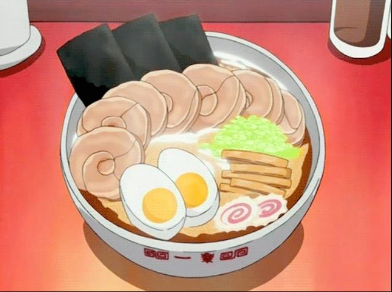

Ichiraku Ramen recipe

Taken from the popular manga with the character of the same name who loves ramen,
this dish is named after the hero's favourite restaurant.
Ingredients
- 6 portions ramen noodles, fresh or instant
- Soy-Marinated eggs
- Marinated bamboo shoots
- Chopped green onion
For the soy sauce broth
- 3 liters water
- 900 g chicken bones
- 450 g boneless pork shoulder or loin
- 3 cloves garlic, peeled
- 1 piece ginger, sliced
- 3 green onions, roughly chopped
- 250 ml soy suace
- 60 ml sake
- 2 tbsp mirin
For the chashu sauce
- 160 ml water
- 80 ml sake
- 80 ml soy sauce
- 3 tbsp sugar
Method of Cooking
- Rinse the chicken bones in cold water, then place them in a large pot with the water, pork, garlic, ginger, and green onions.
- Bring to a boil
- Lower the heat and simmer with pot covered for about 2 hours
- Remove the pork. the strain the broth
- Add soy sauce, and mirin
- Mix chashu ingredients until properly reduced
- mix into cooked ramen and enjoy!